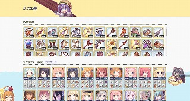
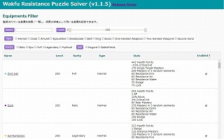
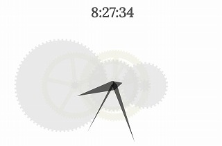
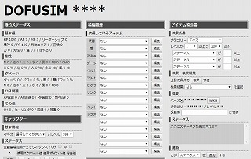

clockhand.net
止め処ないひと時を大切に。
Tools
- 大人気オンラインゲーム「プリンセスコネクト！Re:Dive」の効率厨向け必要素材計上ツールです。
- 誰しもの心に宿るミフユさんのために作成しました。

- フランス産 MMORPG「Wakfu」のビルドシミュレータです。
- ミジンコでも最強のビルドを作成できるように設計されましたが、使い方がまったく分からないと評判です。

Medias
Archives
- SVG 要素を利用したブラウザ上で動作する時計です。
- 歯車の伝播をエミュレートするなど、無意味な部分に拘っています。

- フランス産 MMORPG「Dofus」のビルドシミュレータです。
- 既に完成されたシミュレータが他にあるため需要はありません。が、意外とよく作り込まれています。
- はじめて JavaScript で作成したアプリケーションです。
